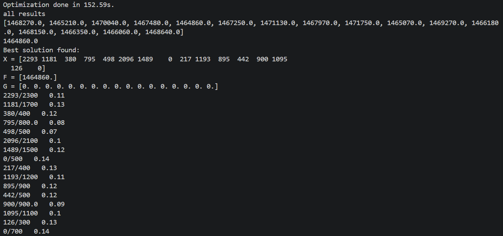
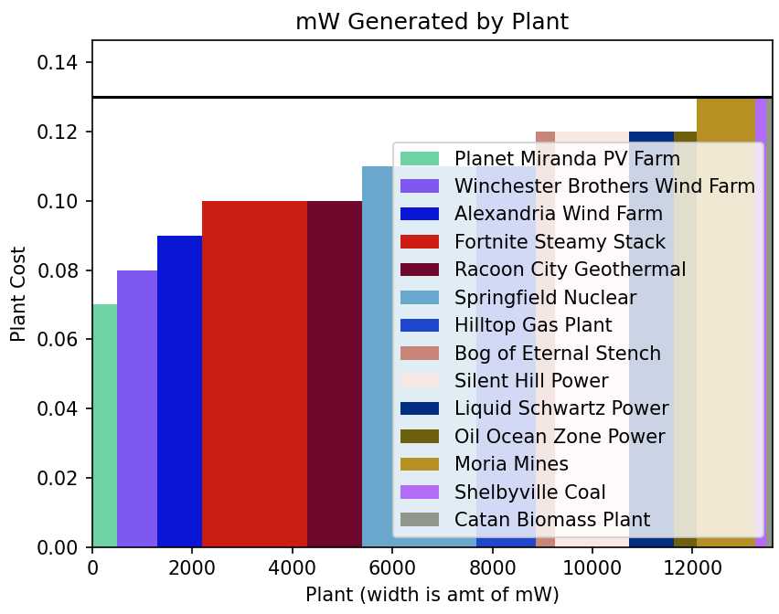
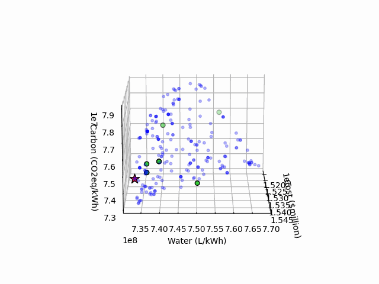
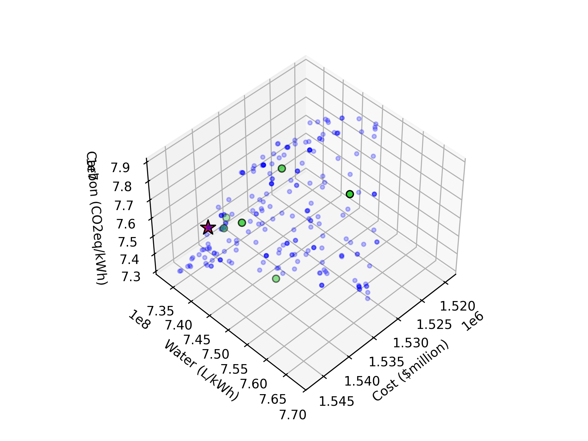

Power Grid Optimization Game*
*Small note: While this project itself is intended to be part of a game, my portion of it was much more focused on the optimization script itself, so I put it here.
Some quick background info: the electrical grid is powered by a variety of power plants of many different types, each with a different production price, environmental footprint, and upper and lower production bound. As consumers, it's in our best interest that the least expensive plants are chosen, as this leads to lower electricity bills. The first part of this project was a Python script to optimize the amount of electricity being generated from multiple plants to find the combination of plant generation levels that costs the consumer the least. This script utilizes the pymoo (Python Multi-Objective Optimization) library and a genetic algorithm to generate several initial populations within the plants' bounds, then chooses the cheapest results from there, crosses them over with each other to create new populations, mutates a few numbers, then repeats until a certain number of generations is reached. This is run independently on several threads at once, and once all are finished, the best result of all runs is returned to the user. They can then be shown a graph of the best result that lines up the plants from cheapest to most expensive to run, with the width of the bars representing the amount of megawatts each plant generates and the black line showing the cost of the most expensive plant running, which turns into the consumers' market price.


Once I had the single objective of cost down, I moved on to adding the environmental impact in terms
of water used and carbon emitted to all of the plants. This presented a problem: before, only one
objective (find the lowest cost possible) existed. Now, though, two more presented themselves: use as
little water as possible, and produce as few emissions as possible. How do you tell the program what
to optimize for?
The answer (for me, at least) was to add a system in which users choose what they care about the
most. This is achieved by providing weights to each of the three objectives, each between zero and one,
with smaller numbers corresponding to higher weights and with all three numbers adding to one. For
people who just want to save money, they could assign a weight of 0 to cost, then split the remaining
weight (1.0) evenly by assigning both water usage and carbon emissions values of 0.5. For the more
well-off or environmentally conscious individual, a higher value could be assigned to cost and lower
values to the others. The test case shown in the GIF below (with the optimization portion sped up to 8x)
uses default weights of 0.1 (cost), 0.6 (water), and 0.3 (carbon), emulating a user who cares about
cost the most and water usage the least.

The new code, on completion of the multi-objective optimization, produces two items: a picture of a graph, and a GIF of that same graph spinning, which allows the user to see the three-dimensional result from all the way around. The graph is marked with a red star showing the best possible distribution for that unique user's case, along with a few green dots showing other optimal solutions to the problem. All other results are shown in blue, with any solution that's mathematically worse than another in all aspects removed. The below items are the result of the run shown in the GIF above.


As this was written for a game, it had to be callable from the game itself with power plants currently in play. To achieve this, the script is packaged within the game's files as a Windows executable that accepts a list of the current plants and the user-defined weights, then returns a file with the optimal solution. Because the game is not written in Python, the script also utilizes regular expressions to convert between the two languages. The game (though currently unfinished) can be found at its GitHub repository here.